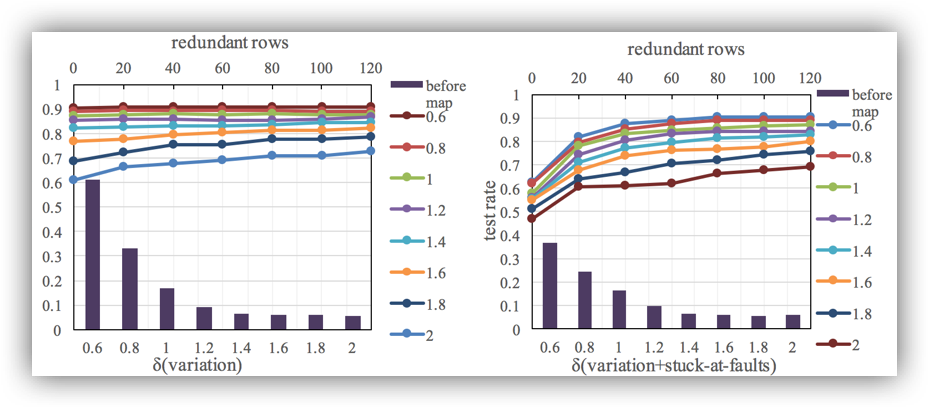
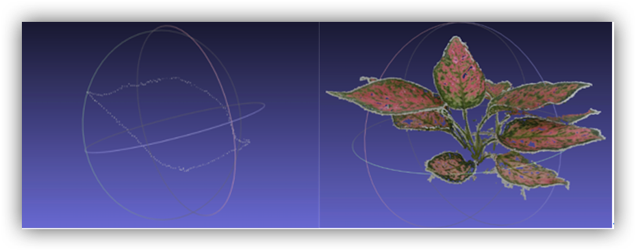
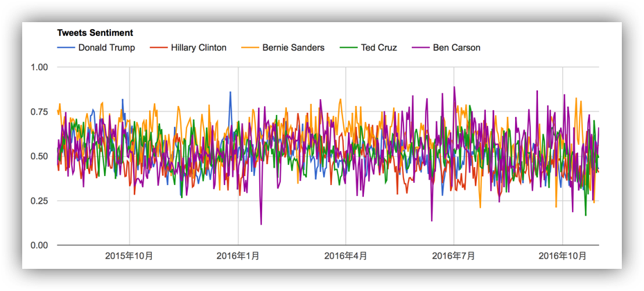

Microsoft Research Asia(MSRA) Sep. 2016-Present, Group of System, {Deep Learning}.
Research Intern @ Systems Research Group, Principal Researcher Lintao Zhang
University of California Los Angeles(UCLA) Jun.-Sep. 2016, {Computer Vision, Data Visualization}.
Research Intern @ Center for Vision, Cognition, Learning, and Autonomy, Prof. Song-Chun Zhu
Advanced Computer Architecture Lab Aug. 2015-Jul. 2017, {Computer Vision(3D), Deep Learning}.
Research Assistant @ Advanced Computer Architecture Institute, Prof. Xiaoyao Liang and Prof. Li Jiang
Visual Media and Data Management Lab Oct. 2015-Feb. 2016, {Computer Vision(3D)}.
Research Assistant @ Visual Media and Data Management Lab, Prof. Bin Sheng
Top

[1] L. Chen, J. Li, J. Shen and L. Jiang, "Learning Variations and Defects: a Neural-network Retraining Method for Fault Tolerance in the RRAM Crossbar" Design, Automation and Test in Europe (DATE) 2017. (accepted)
• Designed redundancy combined with ”Kuhn-Munkres” mapping method applied to the model of variation on memristors given by Vortex(DAC15) where features include normal distribution, random presence and weight-error relations instead of hardware;RRAM Crossbar computings
• Implemented Redundancy-Mapping on the standard 784 × 10 Mnist Data Set (20−30% advanced)
• Analyzed the relationship of topology and mapping and improvements of Redundancy-Mapping
Neural-network Retraining for Fault Tolerance(2016)
Leverage the inherent sparse weight-matrix and self-tuning capability of the neural network to avoid assigning the large value weight to the memristor with defects and high variance. We explore the self-healing of the neural-network to enlarge the solution space of finding the fault tolerable weight-memristor mappings. To train the neural-network, in this paper, we apply the conven- tional back-propagation method that utilizes the gradient descent technique. To show our retraining process with fixed weight, we use a simple two-layer fully connect neural-network as an example.
Top

[2] J. Shen, X. Yang and Z. Fan, "3D Reconstruction of Plant Leaves from Rough Multi-Photos" IEEE Winter Conference on Applications of Computer Vision(WACV) 2017. (submitted)
• Designed the Filtering Feature Sequence as KNN ratio test, symmetry test and RANSAC after SURF
• Designed Surface-Stereo Lookup Table that stores current frame plane coordinates with its accordingly triangle three-dimensional coordinates for tracking processing iterations
• Implemented the three-dimensional reconstruction on random reddish-green Epipremnum aureum
Leaf Three-dimensional Reconstruction with Multi-Photos(2015)
We first introduce feature detection sequence as KNN ratio test, symmetry test and RANSAC after basic SURF feature detection to get the most robust feature detector. A BruteForceMatcher obtains two nearest neighbors through comparing the descriptors that removes bad matches then further checked by DMatches to delete all non-symmetrical matches. Finally RANSAC returns the fundamental matrix. Experiments show 30 matches for threshold would be promising. We also introduce Lookup Table that stores 2D coordinates of current frame and its triangled 3D coordinates, then by keeping track of 2D-3D pair during each iteration of processing new frames we can minimizes projection errors. We quantify the effect of generated contour by fine points and observation. Experiments on real-world datasets show effectiveness of our algorithm and improvements.
Top

[3] Tracking the US presidential elections(2016) [Viz]
Jiyuan Shen, Weixin Li
Supervised by Prof.Song-Chun Zhu, in the Department of Statistics, UCLA
We track statistics both from texts and graphs by utilizing the hierarchical And-Or Graph to jointly represent the latent structure. New topics are detected through a cluster sampling process for which we adopted Swendsen-Wang Cuts for tracking. We generate topic trajectories to show how topics emerge, evolve and disappear over time. Experiments shown on both a public dataset Reuters-21578 and a self-collected dataset named UCLA Broadcast News Dataset. Results show that this method can explicitly describe the textual and visual data in news videos and produce meaningful topic trajectories.
Top
(2016) get started with linux kernel. The document includes five parts: how to compile the Linux Kernel; module programing; process management (schedule records in times of process); memory management (a module create a proc file system which accepts 3 commands inputs); file system (study romfs including hide, encrypt and modify permission of files). [Github] [Tutorial]
(2014) simple linux C codes for getting started. All codes were written when I was studying Operating System Class in SJTU including file copy, shell-like programing, threading and IPC problem implementations (BurgerBuddyProblem). [Github]
(2016) get started with Twitter REST API and Google Map API (similar to scrawler implementations). Here you will follow my steps including get one user's followers' id, their profile, image and location. Check if the locations are in US by Google Map. Count number of common followers of two users.[Tutorial][Github]
(2016) get started with 3 multiprocessing tools (openmp, hadoop and pthread). The corresponding questions are (1) openmp and hadoop - matrix multipication; (2) pthread - there are four threads (thread 1 output 1, thread 2 output 2, thread 3 output 3, ...). [Github]
(2015) get started with simple-scalar tool and use it as a method to take cache performance and optimazation study. I make the document when I was studying computer architecture class in SJTU, and I still remember that such materials online are few. The file introduces 'sim-cheetah' and 'sim-outorder' with SPEC95 benchmark 'go'. First, use 'sim-cheetah' as a cache simulator to investigate the set and associativity effects on miss rate. Second, further use 'sim-cheetah' to discuss the cache upon replacement policies (here focus on LRU and MIN algorithm). Third, use 'sim-outorder' to investigate the effects of branch predictors on the execution for the SPEC95 benchmark 'go'. [Tutorial]
Top
Blog: Write for Daily Programmings.
Music: Hulusi - Grade 8 - No.0082012161820 (begin when I was a 10-year little girl)
Novel: Love the classic Chinese novel 红楼梦 (Dream of the Red Chamber).
Sports: Jogging; Tennis; Hiking.
I was born and grew up in Changsha, China
Gold Prize in SICTIC, China, 2011 ; Representative Competitor of Hunan Province in China
Academic Excellence Scholarship (Top 5%), 2014
The Fourth Computer CCF Software Capacity Certification (C++), 2015
Class Commissary in charge of SEIEE-1305 Class Organization, 2013-2017
Secratary in Network Department of SEIEE Student Union, 2013-2015
Athelete in the 45th Sports Meeting of SJTU, 2014
Volunteer in Campus Run, 2015
Volunteer in Shanghai International Marathon, 2014-2015
Vice Group Leader in Summer Social Practice, 2014
Network Leader in Freshman Welcome Dinner, 2014
Top